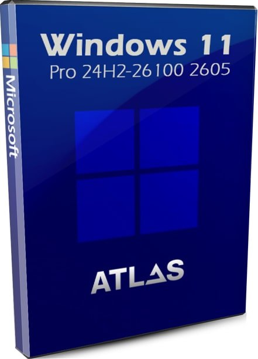
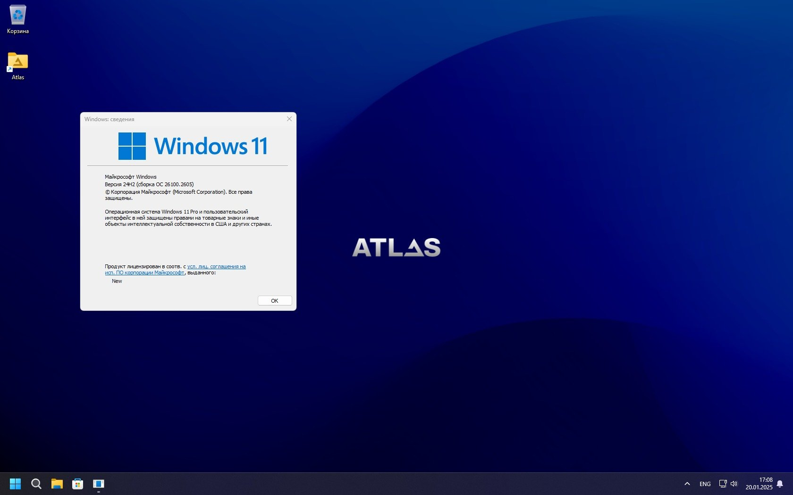
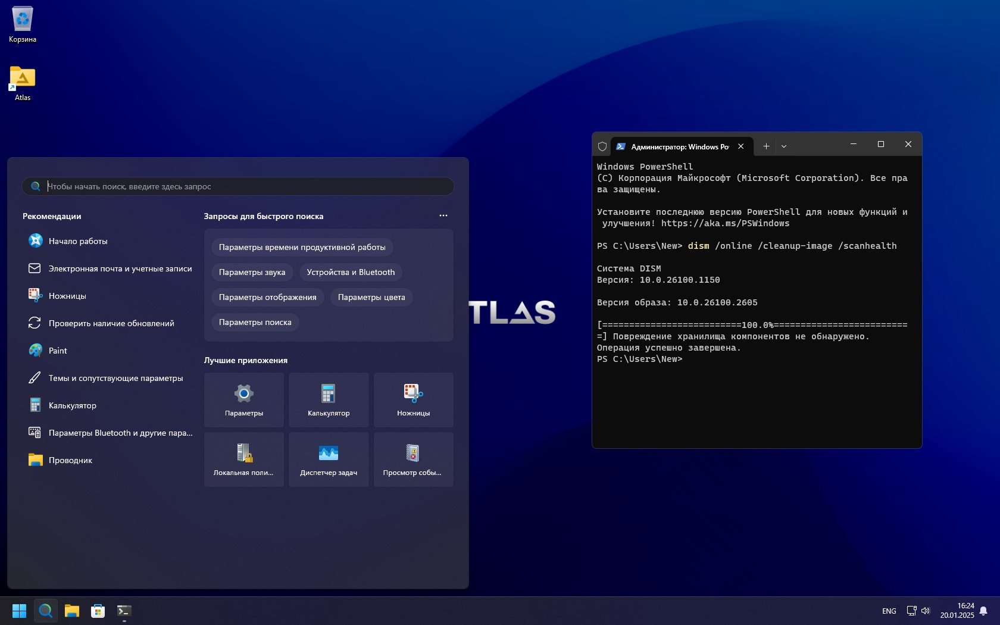
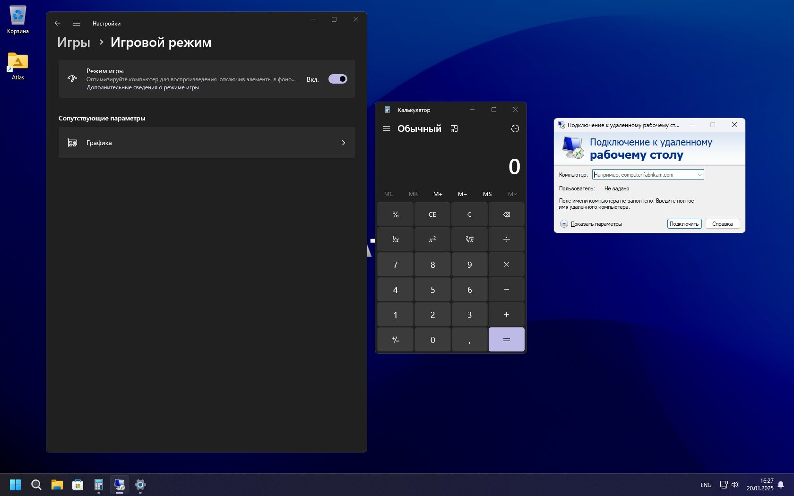
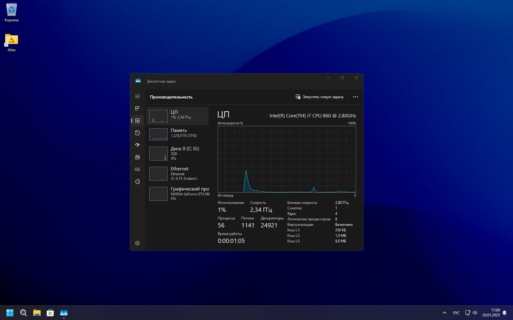
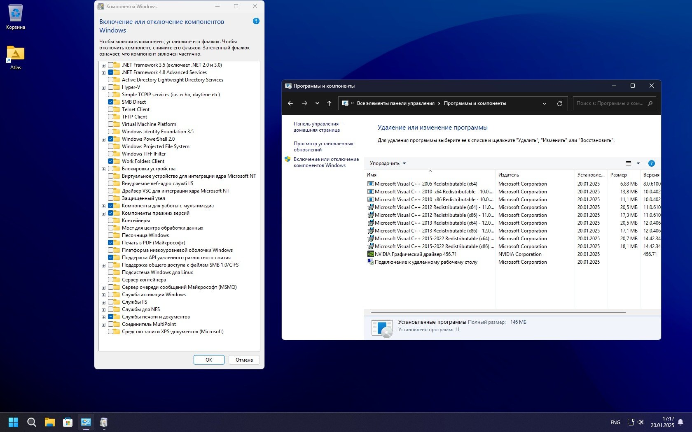

Windows 11 Pro 24H2 Atlas OS игровая сборка с высоким FPS

Преимущества Win 11 Atlas OS 24H2
- Уникальная авторская игровая сборка с повышенным FPS, которая является очень знаменитой. Для примера (в ходе тестов) сборка показала FPS на 25 выше в The Last Plague 2024 года, чем в недавней сборке Windows 10 IoT LTSC 21H2. И это результат на древнем железе, так что на современных компах FPS вас вообще должен порадовать.
- Стильный и легко узнаваемый дизайн сборки, который стал уже визитной карточкой данной сборки.
- Неплохой набор дополнительных твиков и инструментов для дальнейшей настройки Atlas OS (см. на рабочем столе).
- Самая свежая и высокотехнологичная винда 24H2 с оптимизацией представляет наибольший интерес для любителей игр (особенно, для владельцев хороших игровых компьютеров).
- Компьютер на Atlas OS будет у вас работать реально очень тихо – благодаря устранению/отключению различных посторонних фоновых процессов, которых слишком много в оригинальной Windows 11.
- Разработки Atlas OS представлены также github с открытым исходным кодом, и они могут представлять интерес для продвинутых пользователей, сборщиков и программистов.
- Сборка оптимизирована через PowerShell, на сегодняшний день – это самый сложный метод, требующий высокой квалификации от сборщика. На наш взгляд, сборки гораздо проще создавать Dism-скриптом, и не на живой системе, а на смонтированной образе.
Конфигурация Atlas OS
- Защитник/Смартскрин выключены, Эдж удален. Все эти настройки можно было и поменять при создании сборки – но для хорошей оптимизации это всё выключено-убрано. Скрипт Atlas по-своему деинсталлировал Эдж, оставив почему-то 2 его службы в автозагрузке, рекомендуем их убрать при помощи программы Autoruns.
- Сохранен сервис WinUpdate.
- Реализована лучшая игровая оптимизация. Судя по тестам, довольно мало сборок, которые реально смогут конкурировать с Windows 11 Atlas OS в плане игровой производительности.
- Прямо после установки интерфейс системы автоматически изменяется на Atlas OS.
- Применен свой собственный план энергопотребления. Неизвестно, лучше ли он, чем стандартный план энергопотребления, но раз автор сборки так задумал – мы это оставили.
- Выключена гибернация, применены оптимальные параметры для индексирования и прочих системных служб.
- Вырезан OneDrive.
Минусы Atlas OS
- Отсутствие готового iso-образа, который пришлось самостоятельно свернуть из системы в режиме аудита.
- Не гарантируем, что система с данной конфигурацией будет всегда получать апдейты без различных ошибок.
- Скрипт Atlas OS почему-то не удалил некоторые 100% левые задания Планировщика (мы их просто отключили, не удалили).
- В небольшом оставленном наборе плиток есть некоторые явно невостребованные у нас приложения, например, Фотографии.
Дополнительная информация
Сборка вам предложена сразу в виде iso-образа. Это сделано для удобства, т.к. не все умеют пользоваться скриптом Atlas OS для настройки системы. Если сборка вам интересна, то ПО для ее создания без проблем скачиваются с офсайта Atlas. Поэтому вы всегда сможете создать своими силами такую сборку, используя соответствующий софт от ее автора.
В ISO образах допускается установщик браузера и некоторые пользовательские изменения по умолчнию для браузера Chrome, каждый может без проблем изменить настройки браузера на свои предпочтительные. Все авторские сборки перед публикацией на сайте, проходят проверку на вирусы. ISO образ открывается через dism, и всё содержимое сканируется антивирусом на вредоносные файлы.
{kind=link}

{kind=link}

{kind=link}

{kind=link}

{kind=link}

Дата обновлений: 21 января 2025
Версия: игровая сборка Windows 11 Pro 24H2 (v.26100.2605) Atlas OS
Разрядность: 64-бит
Язык Интерфейса: RUS Русский
Размер образа: 3,13 GB